Grids
Grids are described inside a blueprint file using lattice map or grid contents fields to define arrangements in
Hex, Cartesian, or R-Z-Theta. The optional lattice pitch entry allows you to specify spacing between objects that is
different from tight packing. This input is required in mixed geometry cases, for example if Hexagonal assemblies are to
be loaded into a Cartesian arrangement. The contents of a grid may defined using one of the following:
geom:Choose a basic geometry for your lattice: catesian, hex, hex_corners_up, or thetarz.
grid contents:A direct YAML representation of the contents.
lattice map:A ASCII map representing the grid contents.
lattice pitch:The spacing between your lattice point / rows.
symmetry:The default is “full”, but for hexagonal lattices, you have the option of “third periodic”.
Example grid definitions are shown below
grids:
control:
geom: hex_corners_up
symmetry: full
lattice map: |
- - - - - - - - - 1 1 1 1 1 1 1 1 1 4
- - - - - - - - 1 1 1 1 1 1 1 1 1 1 1
- - - - - - - 1 8 1 1 1 1 1 1 1 1 1 1
- - - - - - 1 1 1 1 1 1 1 1 1 1 1 1 1
- - - - - 1 1 1 1 1 1 1 1 1 1 1 1 1 1
- - - - 1 1 1 1 1 1 1 1 1 1 1 1 1 1 1
- - - 1 1 1 1 1 1 1 1 1 1 1 1 1 1 1 1
- - 1 1 1 1 1 1 1 1 1 1 1 1 1 1 1 1 1
- 1 1 1 1 1 1 1 1 1 1 1 1 1 1 1 1 1 1
7 1 1 1 1 1 1 1 1 0 1 1 1 1 1 1 1 1 1
1 1 1 1 1 1 1 1 2 1 1 1 1 1 1 1 1 1
1 1 1 1 1 1 1 1 1 1 1 1 1 1 1 1 1
1 1 1 1 1 1 1 1 1 1 1 1 1 1 1 1
1 1 1 1 1 1 1 1 1 1 1 1 1 1 1
1 1 1 1 1 1 1 1 1 1 1 1 1 1
1 1 1 1 1 1 1 1 1 3 1 1 1
1 1 1 1 1 1 1 1 1 1 1 1
1 6 1 1 1 1 1 1 1 1 1
1 1 1 1 1 1 1 1 1 1
sfp:
symmetry: full
geom: cartesian
lattice pitch:
x: 50.0
y: 50.0
grid contents:
[0,0]: MC
[1,0]: MC
[0,1]: MC
[1,1]: MC
Tip
Both pin and core grid definitions to share this input.
Lattice Maps
One of the features of the ARMI blueprints file is that the user can define a lattice layout of parts of the reactor
using ASCII art (from the asciimaps module). This is meant to help the user define the
layout of assemblies in a reactor core or pins in a block.
The actual syntax is bespoke to ARMI. See the examples below. And note that the whitespace shown is important.
Full-Core Cartesian Examples
Probably the easiest lattice map to draw using ARMI’s custom ASCII format is a Cartesian grid. Here it is pretty clear how to lay our rows and columns of symbols to represent the grid. Here is a small 6x6 Cartesian map
geom: cartesian
symmetry: full
lattice pitch:
x: 1.0
y: 1.0
lattice map: |
A B B B B B
A B A A A B
A B A C A B
A B B A A B
A B B B B B
A A A A A A
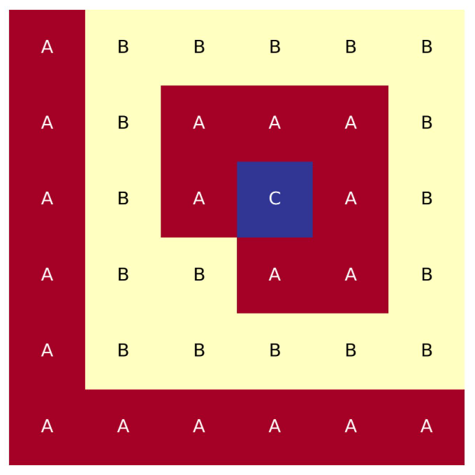
Full-core, Cartesian, 6x6 lattice map.
Though ARMI also supports quarter symmtery, which quadruples the grid
geom: cartesian
symmetry: quarter
lattice pitch:
x: 1.0
y: 1.0
lattice map: |
A B B B B B
A B A A A B
A B A C A B
A B B A A B
A B B B B B
A A A A A A
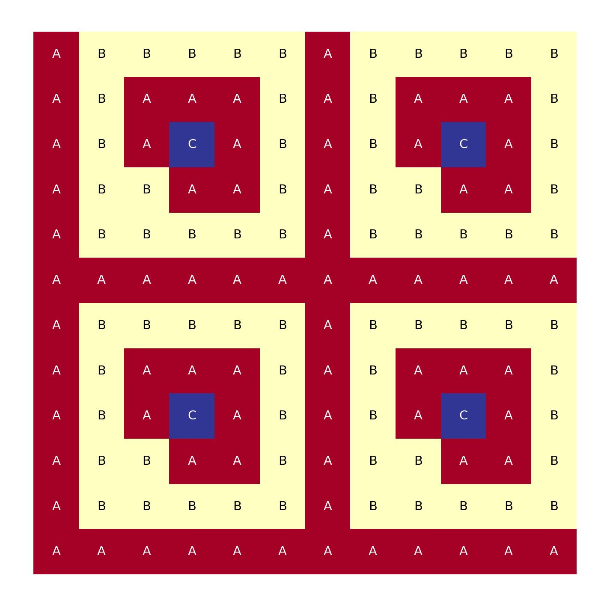
Cartesian, 12x12 lattice map, made from quarter symmetry.
Full-Core Hexagonal Examples
ARMI also supports two types of hexagonal lattices: one with the flat sides of the hexagons pointing up, and one with the corners of the hexagons pointing up.
The more common of the two is the flat-side up, or “flats-up” map
geom: hex
symmetry: full
lattice map: |
- - E
- E E
- E D E
E D D E
E D C D E
D C C D
E C B C E
D B B D
E C A C E
D B B D
E C B C E
D C C D
E D C D E
E D D E
E D E
E E
E
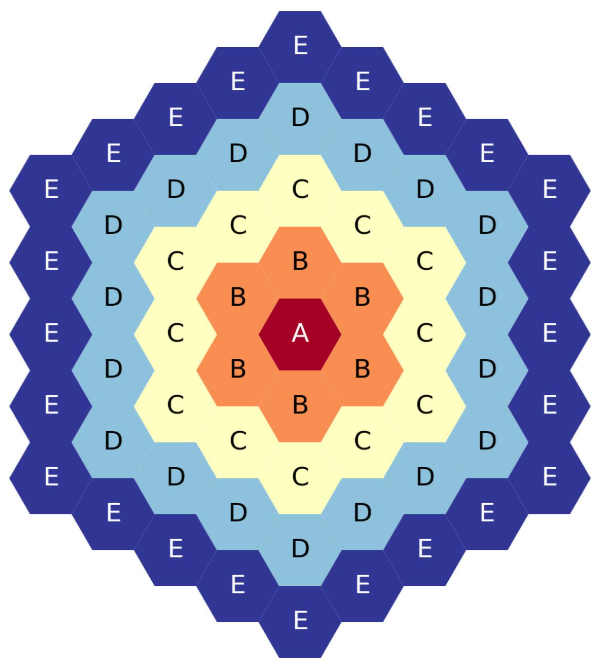
Five-ring, full-core, flats-up hexagonal lattice map.
and for a larger example
geom: hex
symmetry: full
lattice map: |
- - - - - - LC
- - - - - - LC LC
- - - - - LC SH LC
- - - - - LC SH SH LC
- - - - LC SH RR SH LC
- - - - LC SH RR RR SH LC
- - - LC SH RR IC RR SH LC
- - - LC SH RR IC IC RR SH LC
- - LC SH RR IC RR IC RR SH LC
- - LC SH RR IC RR RR IC RR SH LC
- LC SH RR IC RR SB RR IC RR SH LC
- LC SH RR IC RR SB SB RR IC RR SH LC
LC SH RR IC RR SB CA SB RR IC RR SH LC
- SH RR IC RR SB CA CA SB RR IC RR SH
LC RR IC RR SB CA SH CA SB RR IC RR LC
- SH IC RR SB CA SH SH CA SB RR IC SH
LC RR RR SB CA SH IC SH CA SB RR RR LC
- SH IC SB CA SH IC IC SH CA SB IC SH
LC RR RR CA SH IC LC IC SH CA RR RR LC
- SH IC SB SH IC LC LC IC SH SB IC SH
LC RR RR CA IC LC SE LC IC CA RR RR LC
- SH IC SB SH LC SE SE LC SH SB IC SH
LC RR RR CA IC SE SH SE IC CA RR RR LC
- SH IC SB SH LC SH SH LC SH SB IC SH
LC RR RR CA IC SE RR SE IC CA RR RR LC
- SH IC SB SH LC SH SH LC SH SB IC SH
LC RR RR CA IC SE SH SE IC CA RR RR LC
- SH IC SB SH LC SE SE LC SH SB IC SH
LC RR RR CA IC LC SE LC IC CA RR RR LC
- SH IC SB SH IC LC LC IC SH SB IC SH
LC RR RR CA SH IC LC IC SH CA RR RR LC
- SH IC SB CA SH IC IC SH CA SB IC SH
LC RR RR SB CA SH IC SH CA SB RR RR LC
- SH IC RR SB CA SH SH CA SB RR IC SH
LC RR IC RR SB CA SH CA SB RR IC RR LC
- SH SH IC RR SB CA CA SB RR IC RR SH
LC SH RR IC RR SB CA SB RR IC RR SH LC
- LC SH RR IC RR SB SB RR IC RR SH LC
- LC SH RR IC RR SB RR IC RR SH LC
- LC SH RR IC RR RR IC RR SH LC
- LC SH RR IC RR IC RR SH LC
- LC SH RR IC IC RR SH LC
- LC SH RR IC RR SH LC
- LC SH RR RR SH LC
- LC SH RR SH LC
- LC SH SH LC
- LC SH LC
- LC LC
- LC
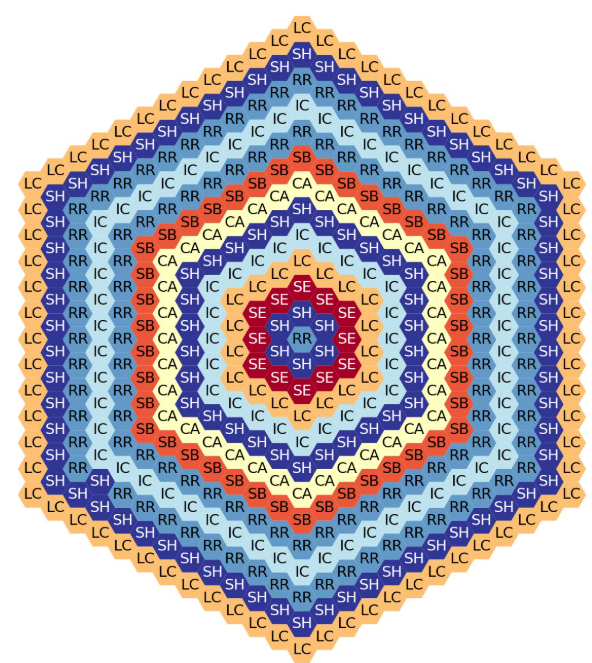
Fourteen-ring, full-core, flats-up hexagonal lattice map.
The other version is the corners up lattice. Notice how the - placeholders are used differently.
geom: hex_corners_up
symmetry: full
lattice map: |
- - - D D D D
- - D C C C D
- D C B B C D
D C B A B C D
D C B B C D
D C C C D
D D D D
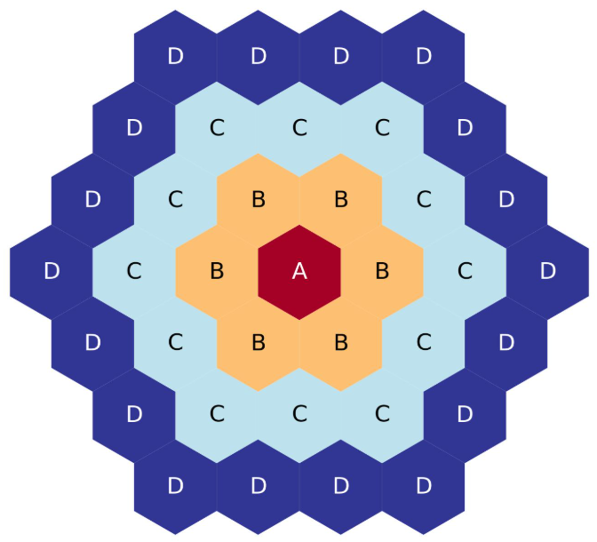
Four-ring, full-core, corners-up hexagonal lattice map.
and a larger example
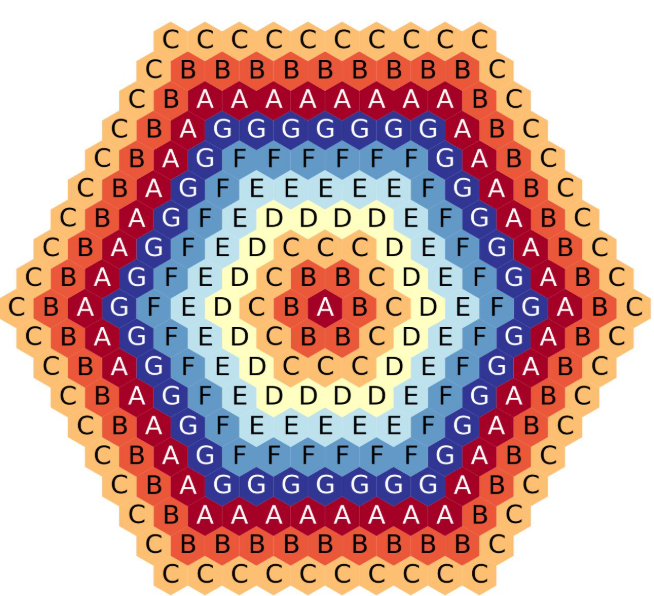
Four-ring, full-core, corners-up hexagonal lattice map.
Tip
If the reactor core is flats-up, then the assembly pins in that core should be corners up. And vice versa.
Placeholders and Whitespace
In lattice maps whitespace is used to separate symbols. The exact count of spaces is not strictly speaking important; one space is as good as five. The following to lattice maps yield the same result, though obviously one is easier to read than the other
geom: cartesian
symmetry: full
lattice pitch:
x: 1.0
y: 1.0
lattice map: |
C C C C C
C B B B C
C B A B C
C B B B C
C C C C C
geom: cartesian
symmetry: full
lattice pitch:
x: 1.0
y: 1.0
lattice map: |
C C C C C
C B B B C
C B A B C
C B B B C
C C C C C
The - symbol in a lattice map can be used to replace characters with empty space. For instance, above we saw this
geom: hex
symmetry: full
lattice map: |
- - E
- E E
- E D E
E D D E
E D C D E
D C C D
E C B C E
D B B D
E C A C E
D B B D
E C B C E
D C C D
E D C D E
E D D E
E D E
E E
E
Five-ring, full-core, flats-up hexagonal lattice map.
But we can replace do some random replacements with - placeholders and get a different result
geom: hex
symmetry: full
lattice map: |
B B E
B E E
B E D E
E D D E
E D C D E
D C C D
E C - C E
D - - D
E C A C E
D - - D
E C - C E
D C C D
E D C D E
E D D E
E D E
E E
E
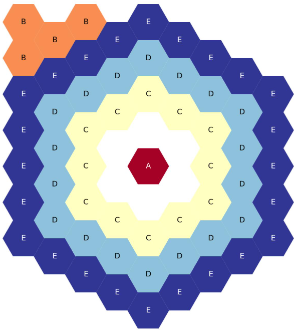
Five-ring, full-core, flats-up hexagonal lattice map. Placeholder fun.
Two-Ring, Third-Core Hex Maps
There is another kind of lattice map that ARMI supports; third-core lattice maps. These are a special case of hexagonal lattice maps, where instead of drawing out the entire lattice (as above) only one third of the hexagonal lattice is drawn.
This is a common practice in modeling hexagonal reactor cores. To speed up a model run, for a quick study, only one- third of the reactor core is fully modeled, and boundary conditions are set to model this as if it were part of a full reactor core. This only works if the reactor core is exactly symmetric of course.
While this may be a niche case, it is fully supported in ARMI lattice maps, and elsewhere. The only tricky point is that it is not always obvious how to draw the ASCII map to represent these third-core hex grids. To help with that, below are examples of third-core hex grids shown from two rings to eleven. So if you need to make such a lattice map yourself, you should be able to start by copy/pasting the examples below.
First, let us start with a very simple case; the two-ring hexagonal lattice map. The YAML ASCII map to draw such a lattice is shown below
geom: hex
symmetry: third periodic
lattice map: |
A
B
C
The figure below shows the third-core map plotted out. Also shown is the full-core plotted to represent what an ARMI simulation thinks the entire lattice map looks like, based on the third of the core provided in the ASCII art
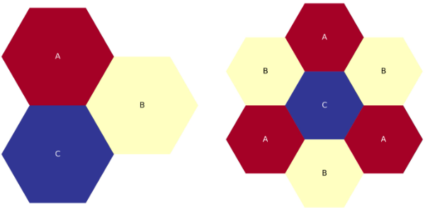
Two-ring, third-core, flats-up hexagonal lattice map.
There is another possibility not shown in the example above. A hexagonal grid can be represented with flats or corners
pointing up on the plot. In ARMI, we represent the “corners up” version by specifying a slight change to the geom
field: hex_corners_up as opposed to just hex
geom: hex_corners_up
symmetry: third periodic
lattice map: |
A
B
C
The figure below is a quick plot of the above, corners up version of the two-ring lattice map
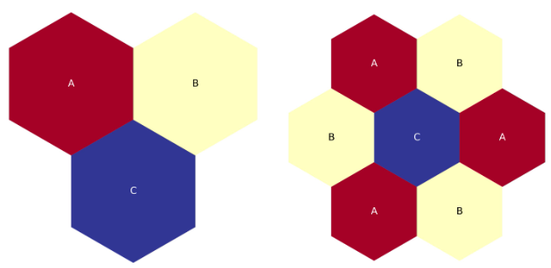
Two-ring, third-core, corners-up hexagonal lattice map.
Notice that the two ASCII maps above have three items specified: A, B, and C. The center hex is C and
the others represent the first ring. The full core map shown has seven elements, the center plus six hexagons in the
first ring. So, to calculate the number of hexagons in the full core map from the number of hexagons shown in a third-
core map there is a simple relation
Three-Ring, Third-Core Hex Maps
Continuing the logical progression, below is an ASCII map of a three-ring, flats-up, third-core hexagonal lattice
geom: hex
symmetry: third periodic
lattice map: |
D
E
A F
B
C G
The figure below shows third-core and full-core plots of the above YAML
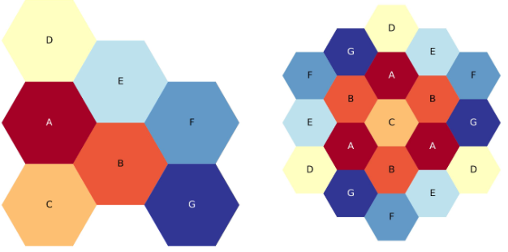
Three-ring, third-core, flats-up hexagonal lattice map.
And just one more time, let us show the YAML for the corners-up version of the above three-ring lattice
geom: hex_corners_up
symmetry: third periodic
lattice map: |
D
E
A F
B
C G
The figure below shows the third-core and full-core plots for the three-ring, corners up lattice
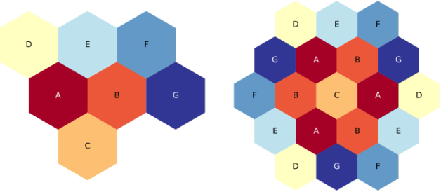
Three-ring, third-core, corners-up hexagonal lattice map.
Four-Ring, Third-Core Hex Maps
From here on out, the examples will only show the “flats-up” versions of the lattice maps and plots, to reduce duplication.
The four-ring, third-core lattice map is starting to get larger and more complicated than the above examples
geom: hex
symmetry: third periodic
lattice map: |
D
D D
C D
C D
B C
B D
A C
The figure below shows a plot of the above four-ring example. If you are copying from this example, please note that each ring is filled with a different letter. Hopefully this makes your translation easier.
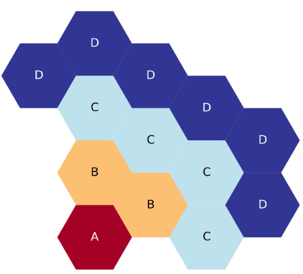
Four-ring, third-core, flats up hexagonal lattice map.
Five-Ring, Third-Core Hex Maps
Five-ring and above ASCII maps start to require the placeholder - character. This does not represent a hexagon, but
is just a piece of cruft to help lay out larger ASCII maps
geom: hex
symmetry: third periodic
lattice map: |
- E
E E
D E
D D E
C D E
C D
B C E
B D
A C E
The next figure shows a plot of the five-ring, third core lattice map above. Again, each hexagonal ring is filled with a different letter / symbol, to hopefully help make the map more clear.
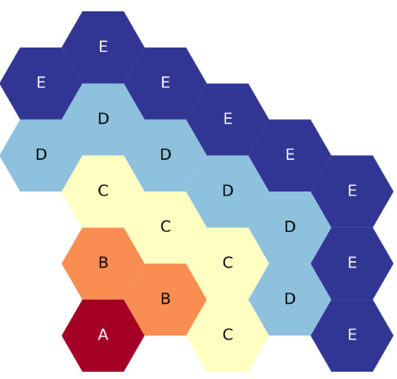
Five-ring, third-core, flats up hexagonal lattice map.
Six-Ring, Third-Core Hex Maps
From six-rings and up, the third-core lattice maps start to look a lot more similar to each other. There is a noticable pattern emerging that should make it easier to add or remove one hexagonal ring from the map
geom: hex
symmetry: third periodic
lattice map: |
- F
F F
F E F
E E F
D E F
D D E F
C D E
C D F
B C E
B D F
A C E
The figure below shows the six-ring, third-core, flats-up, hexagonal lattice map, with each ring filled with a different symbol for clarity.
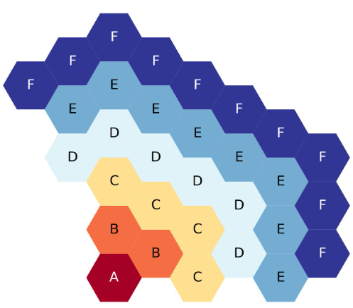
Six-ring, third-core, flats up hexagonal lattice map.
Seven-Ring, Third-Core Hex Maps
The seven-ring map looks much like the six-ring map, exact we have added a new ring filled with G symbols. And from
here on out, even extra ring added to the map requires adding exactly one more placeholder - symbol, to correctly
space out the ASCII letters and make them more readable
geom: hex
symmetry: third periodic
lattice map: |
- G
- G G
G F G
F F G
F E F G
E E F G
D E F G
D D E F
C D E G
C D F
B C E G
B D F
A C E G
The next figure shows the seven-ring, third-core, flats-up hexagonal lattice map, each ring filled with a different symbol.
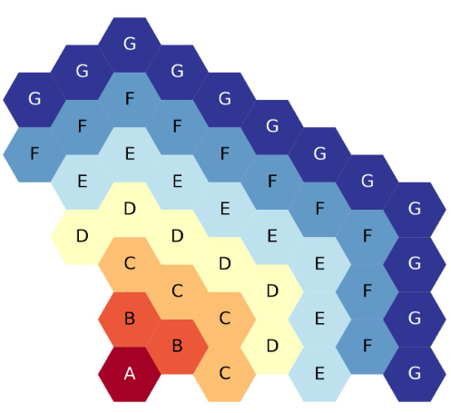
Seven-ring, third-core, flats up hexagonal lattice map.
Eight-Ring, Third-Core Hex Maps
The YAML for an eight-ring third core lattice map looks much the same as the seven-ring above. But notice the new ring
added has been filled with A symbols and one more - placeholder was added.
geom: hex
symmetry: third periodic
lattice map: |
- - A
- A A
A G A
A G G A
G F G A
F F G A
F E F G A
E E F G A
D E F G
D D E F A
C D E G
C D F A
B C E G
B D F A
A C E G
The figure below shows the eight-ring, third-core, flats-up hexagonal lattice map, each ring filled with a different symbol.
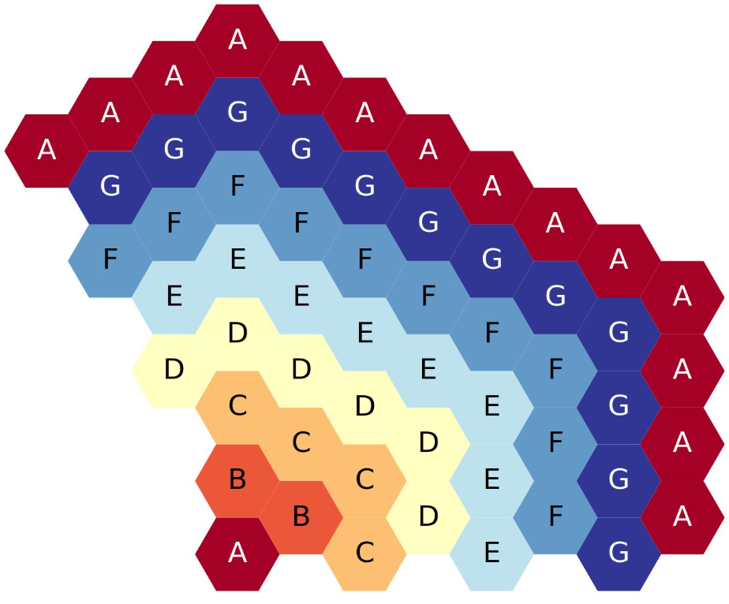
Eight-ring, third-core, flats up hexagonal lattice map.
Nine-Ring, Third-Core Hex Maps
The nine-ring lattice map below looks much like the eight ring above. The new ring has been filled with B symbols
and one more - placeholder has been added.
geom: hex
symmetry: third periodic
lattice map: |
- - B
- B B
- B A B
B A A B
A G A B
A G G A B
G F G A B
F F G A B
F E F G A B
E E F G A
D E F G B
D D E F A
C D E G B
C D F A
B C E G B
B D F A
A C E G B
The figure below shows the nine-ring, third-core, flats-up hexagonal lattice map, each ring filled with a different symbol.
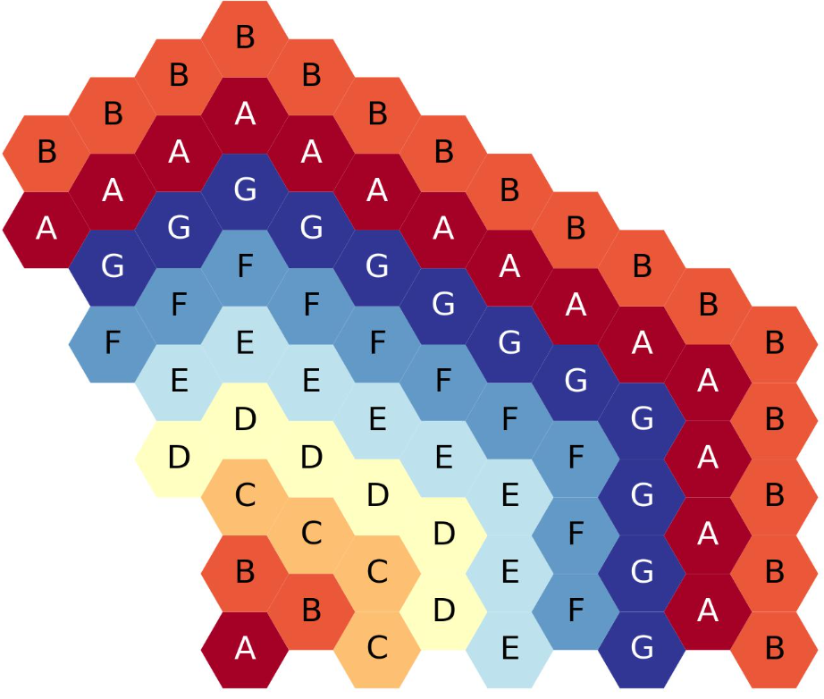
Nine-ring, third-core, flats up hexagonal lattice map.
Ten-Ring, Third-Core Hex Maps
Below is the YAML representing a ten-ring, third core, hexagonal lattice map. A new ring filled with C has been
added to the nine-ring lattice map above and one more - placeholder has been added.
geom: hex
symmetry: third periodic
lattice map: |
- - C
- - C C
- C B C
C B B C
C B A B C
B A A B C
A G A B C
A G G A B C
G F G A B C
F F G A B C
F E F G A B
E E F G A C
D E F G B
D D E F A C
C D E G B
C D F A C
B C E G B
B D F A C
A C E G B
The figure below shows the 10-ring, third-core, flats-up hexagonal lattice, each ring filled with a different symbol.
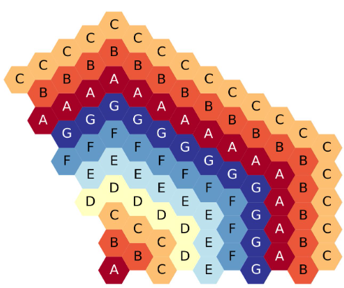
Ten-ring, third-core, flats up hexagonal lattice map.
Eleven-Ring, Third-Core Hex Maps
Below is the YAML representing a eleven-ring, third core, hexagonal lattice map. A new ring filled with D has been
added to the eleven-ring lattice map above and one more - placeholder has been added.
geom: hex
symmetry: third periodic
lattice map: |
- - - D
- - D D
- D C D
- D C C D
D C B C D
C B B C D
C B A B C D
B A A B C D
A G A B C D
A G G A B C D
G F G A B C D
F F G A B C
F E F G A B D
E E F G A C
D E F G B D
D D E F A C
C D E G B D
C D F A C
B C E G B D
B D F A C
A C E G B D
The figure below shows the eleven-ring, third-core, flats-up hexagonal lattice map, each ring filled with a different symbol.
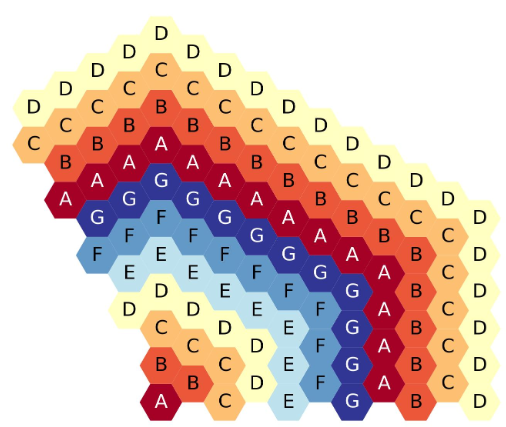
Eleven-ring, third-core, flats up hexagonal lattice map.
This same logic of adding a new ring to the ASCII representation of the lattice map can be used to create arbitrarily large third-core, hexagonal lattice maps. However, we will stop at 11 rings because we have to stop somewhere.